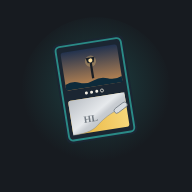

Pecan Pie shows nodes near you and checks when you reach one. Your location stays on this phone.
Scratch the lower panel.
Your tester code: . Include it in your feedback so we can match it to your play. How to play
Mock location ignores real GPS and treats every fix as accurate to 5 m. Every scratch is logged on this phone; with a log endpoint set, events are also sent there.
σ is the population standard deviation of the 64 cell erase values. The most uneven scratch possible at a 65% line is about 0.477, so cutoffs live between 0 and 0.48. Grading uses the weighted σ; the reveal line uses the plain mean of all 64 cells.
Peel: each pass clears a clean track but leaves fine streaks along the stroke, the way a coin edge skips. Erase per pass sets how many streaks a pass clears, and passes from other angles fill in the rest.
Forcing a condition replaces the computed grade but keeps your real residue, so you can see how a Pristine finish looks on any scratch.
| # | Card | Grade | σ w | Finish | Time | Speed |
|---|
Each row includes all 64 raw cell values at the moment of reveal, plus scratch time and average stroke speed, so you can compare how carefully people scratch high-rank cards against commons. The log is kept in this browser only.